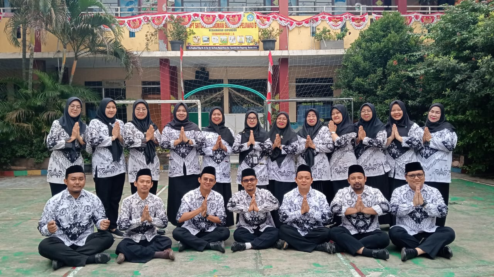

SDN Poris Pelawad 6 terletak di wilayah Poris Pelawad, Kota Tangerang, dan telah menjadi bagian penting dari perkembangan pendidikan dasar di lingkungan ini. Sekolah ini berdiri dengan tujuan memberikan layanan pendidikan berkualitas bagi anak-anak usia sekolah dasar, membentuk generasi penerus yang cerdas, berakhlak mulia, dan berkarakter.
Sejak didirikan, SDN Poris Pelawad 6 telah mengalami berbagai perubahan dan perkembangan, baik dari segi fasilitas maupun tenaga pendidik. Dalam perjalananannya, sekolah ini berkomitmen untuk terus mengikuti perkembangan zaman, dengan mengutamakan kualitas proses belajar-mengajar dan menyediakan lingkungan sekolah yang nyaman dan kondusif.
Hingga saat ini, SDN Poris Pelawad 6 tetap berperan sebagai institusi pendidikan yang mempersiapkan siswa untuk menghadapi tantangan masa depan. Dengan menjunjung tinggi nilai-nilai disiplin, tanggung jawab, dan gotong-royong, sekolah ini bertekad untuk mencetak generasi yang mampu berkontribusi bagi masyarakat dan bangsa.
Sekolah ini juga menjadi pusat pembelajaran yang terbuka bagi masyarakat sekitar, dan senantiasa memperkuat kerjasama dengan orang tua dan lingkungan. Dengan semangat yang tak pernah surut, SDN Poris Pelawad 6 terus menghadirkan pelayanan yang lebih gemilang, berbekal pengalaman panjang serta komitmen terhadap pendidikan berkualitas.